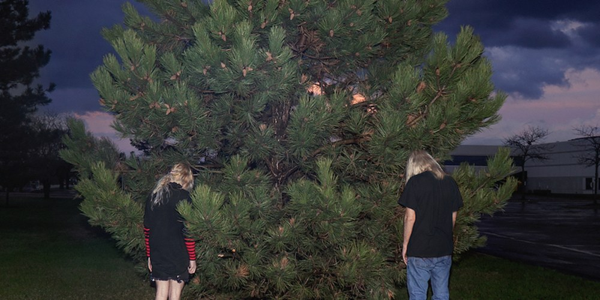

Music is important. Clothing is important. Art is important. I'm sure we all know this, especially with the ample amount of it that exists nowadays, but sadly so much of it is the same. So much of it is forced to emulate another sound, so much clothing is made just to emulate another look.
Although many people may not like their music due to their incredibly experimental sound, it's not hard to accept that they have a following for a reason. With their bouncing 808's and their use of various genres such as nightcore, breakbeat, ska, scene, noise, and other pop music tropes, they bring an early 2000's sound to 2019 in a distorted, imposing and compressed package. Dylan Brady and Laura Les came together to make this incredibly unique project.
According to a Pitchfork album review, (Written by Larry Fitzmaurice, Contributor), "If you're the type to take pleasure in connecting dots across the overwhelmingly scattered trends of 2010s digital music culture, then 100 gecs are right up your alley. Production and songwriting duo Dylan Brady and Laura Les—hailing from Los Angeles and Chicago, respectively—make abrasive, maximalist pop music that isn’t so much indefinable as it is endlessly identifiable, cross-sectioning myriad mainstream-leaning and definitively underground music released over the last decade. Nothing they’re doing is new, per se, but the way in which they do it feels fresh and appealingly unique."
